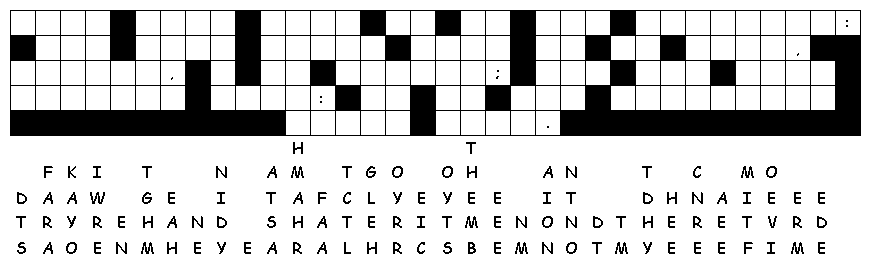
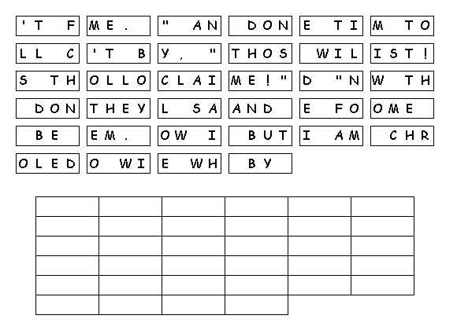

This Week: Isaiah 65:17-25 and Isaiah 12 or Malachi 4:1-2a and Psalm 98, 2 Thessalonians 3:6-13, Luke 21:5-19
Middle-School Pew-work
How
do you feel about being reminded of the end of the world?What
difference does it make in the way you live your life?
________________________________________________________________________
________________________________________________________________________
________________________________________________________________________
________________________________________________________________________
_________________________________________________________________________
________________________________________________________________________
________________________________________________________________________
________________________________________________________________________

Next week: Jeremiah 23:1-6 and Luke 1:68-79 or Jeremiah 23:1-6 and Psalm 46, Colossians 1:11-20, Luke 23:33-43
This Week: Isaiah 65:17-25 and Isaiah 12 or Malachi 4:1-2a and Psalm 98, 2 Thessalonians 3:6-13, Luke 21:5-19
Elementary School Pew-work
Use these words to fill in the blanks: war knocked fooled when attack temple follow stones Jesus earthquakes
Some people were talking about the beautiful ___________ used to build the ___________ and about the gifts that had been placed in it. ___________ said, "Do you see these stones? The time is coming when not one of them will be left in place. They will all be ___________ down."
Some people asked, "Teacher, ___________ will all this happen? How can we know when these things are about to take place?"
Jesus replied: Don't be ___________ by those who will come and claim to be me. They will say, "I am Christ!" and "Now is the time!" But don't ___________ them. When you hear about wars and riots, don't be afraid. These things will have to happen first, but that isn't the end. Nations will go to ___________ against one another, and kingdoms will ___________ each other. There will be great ___________, and in many places people will starve to death and suffer terrible diseases. All sorts of frightening things will be seen in the sky.
1. What does
Jesus say will happen to the Temple?
__________________________________________________________________________
2. What are
some physical signs of the last days?
__________________________________________________________________________

Next week: Jeremiah 23:1-6 and Luke 1:68-79 or Jeremiah 23:1-6 and Psalm 46, Colossians 1:11-20, Luke 23:33-43